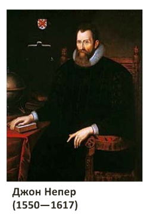

Ще у VIII столітті індійський математик Вірасена розвинув концепцію ардхакчеди, що означала скільки разів число виду 2^n можна поділити на два. Для чисел, які не є цілими степенями двійки ардхакчеда залишалася невизначеною. Він описав також трікачеду та чатуртхачеду — відповідні числа для основ 3 і 4. 1544 року Міхаель Штифель опублікував у Нюрнбергу книгу Arithmetica integra з таблицею цілих чисел і степенів двійки, які їм відповідають. Ці ранні дослідження можна вважати попередниками логарифмів. Метод логарифмування був опублікований Джоном Непером у 1614 році в книзі під назвою Mirifici Logarithmorum Canonis Descriptio (Опис чудового правила логарифмів). Незалежно від Непера логарифми відкрив Юст Бурґі, але його публікація з'явилася на 6 років пізніше. 